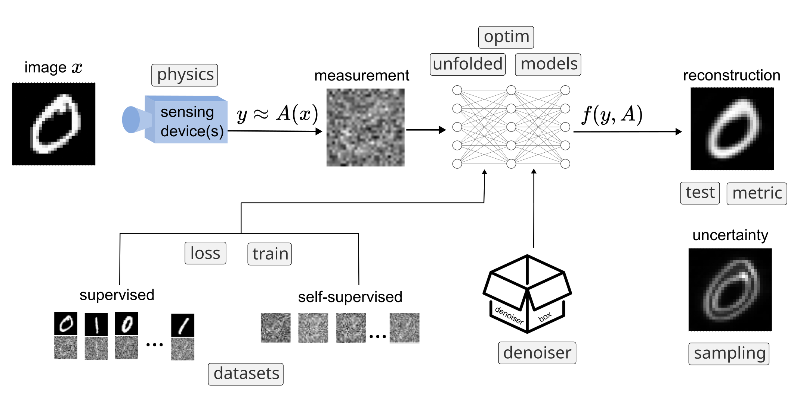

DeepInverse: a Python library for imaging with deep learning#


DeepInverse is an open-source PyTorch-based library for solving imaging inverse problems with deep learning. deepinv accelerates deep learning research across imaging domains, enhances research reproducibility via a common modular framework of problems and algorithms, and lowers the entrance bar to new practitioners.
GitHub: deepinv/deepinv
{kind=link}
Get started#
Check out our 5 minute quickstart tutorial, our comprehensive examples, or our User Guide.
deepinv features
A large framework of predefined imaging operators
Many state-of-the-art deep neural networks, including pretrained out-of-the-box reconstruction models and denoisers
Comprehensive frameworks for plug-and-play restoration, optimization and unfolded architectures
Training losses for inverse problems
Sampling algorithms and diffusion models for uncertainty quantification
A framework for building datasets for inverse problems
Mailing list#
Join our mailing list for occasional updates on releases and new features:
Install#
Install the latest stable release of deepinv:
pip install deepinv
Or, use uv for a faster install:
uv pip install deepinv
Or, to also install optional dependencies:
pip install deepinv[dataset,denoisers]
Since deepinv is under active development, you can install the latest nightly version using:
pip install git+https://github.com/deepinv/deepinv.git#egg=deepinv
Or, for updating an existing installation:
pip install --upgrade --force-reinstall --no-deps git+https://github.com/deepinv/deepinv.git#egg=deepinv
Finding help#
If you have any questions or suggestions, please join the conversation in our Discord server. The recommended way to get in touch with the developers about any bugs or issues is to open an issue.
Maintainers#
Get in touch with our MAINTAINERS.
Contributing#
DeepInverse is a community-driven project and we encourage contributions of all forms. We are building a comprehensive library of inverse problems and deep learning, and we need your help to get there!
Interested? Check out how you can contribute!
Citation#
If you use DeepInverse in your research, please cite our paper on JOSS:
@article{tachella2025deepinverse,
title = {DeepInverse: A Python package for solving imaging inverse problems with deep learning},
journal = {Journal of Open Source Software},
doi = {10.21105/joss.08923},
url = {https://doi.org/10.21105/joss.08923},
year = {2025},
publisher = {The Open Journal},
volume = {10},
number = {115},
pages = {8923},
author = {Tachella, Julián and Terris, Matthieu and Hurault, Samuel and Wang, Andrew and Davy, Leo and Scanvic, Jérémy and Sechaud, Victor and Vo, Romain and Moreau, Thomas and Davies, Thomas and Chen, Dongdong and Laurent, Nils and Monroy, Brayan and Dong, Jonathan and Hu, Zhiyuan and Nguyen, Minh-Hai and Sarron, Florian and Weiss, Pierre and Escande, Paul and Massias, Mathurin and Modrzyk, Thibaut and Levac, Brett and Liaudat, Tobías I. and Song, Maxime and Hertrich, Johannes and Neumayer, Sebastian and Schramm, Georg},
}
Star history#
Keywords: image processing, image reconstruction, imaging, computational imaging, inverse problems, deep learning, mri, superresolution, computed tomography, plug-and-play, deblurring, diffusion models, unfolded, deep equilibrium models